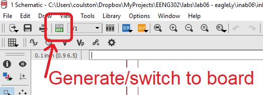
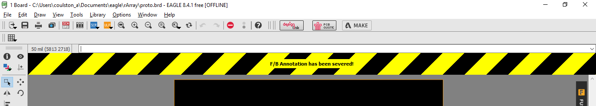
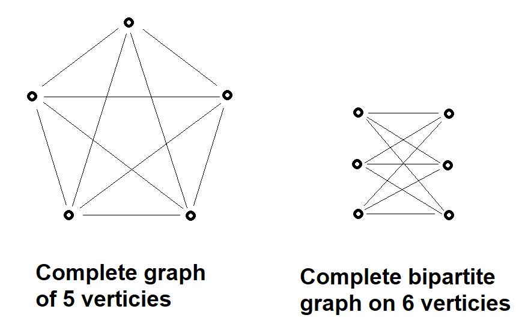
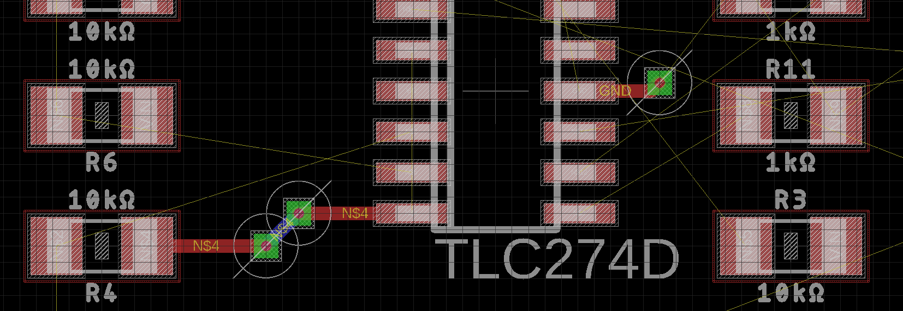
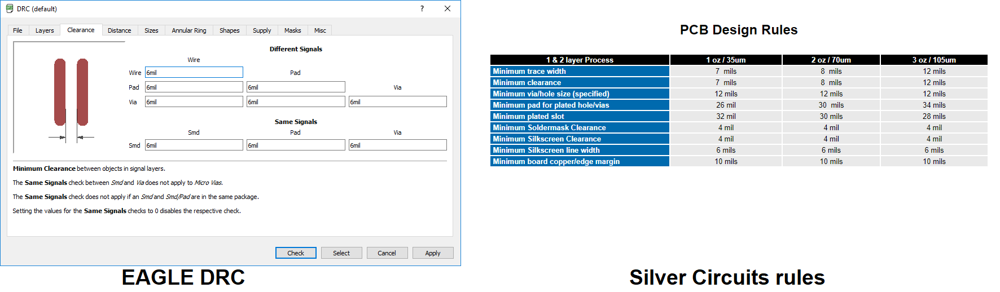

EENG 393
In Lab 8 - EAGLE layoutRequirements
There is no turn-in associated with this inLab. You will need to follow the instructions given below in order to start the layout of your PCB. Hence I would suggest you complete the walk-through in this lab on your own. When you complete this walk-through you will a start on the deliverable that is due in the next lab.Objective
Copy Lab 7 EAGLE files into Lab 8
I would like to you to keep a copy of the work completed so far in lab07 and use it as a starting point for lab08. To do this:- Create a lab08 folder,
- Launch EAGLE CAD,
- Navigate to the lab07 directory so that you can see the orange "E" for lab07,
- Right mouse click on the orange "E" to the left of lab07,
- Select Copy
- In the Copy directory pop-up, navigate into the lab08 directory,
- Click "Select Folder",
- In the Control Panel, right mouse click on the orange "E" to the left of lab07 (in the lab08 project),
- Select rename,
- Change the name of the project to lab08
- Rename lab07.sch to lab08.sch in the same way,
- You can delete lab07.pdf by right mouse clicking on it and selecting delete.
PCB structure
Once the schematic is complete it's time to layout the physical board, the printed circuit board (PCB). The PCB structure is illustrated in the following diagram. Each of the numbers in the diagram is explained in the numbered text which follows.
Note, the following are not question numbers, but identifiers to the figure above.
- Fiberglass substrate (FR4) - If you look at the PCB edge-on you will see a tan colored plate of material that composes the majority of the PCBs volume. Our PCBs are made from most common substrate called FR4. The "FR" in FR4 stands for Flame Retardant meaning that this material self-extinguishes once a flame is removed.
- Trace - The fiberglass substrate of our PCB is laminated with a layer of copper on the top and bottom sides. The thickness of this copper is stated in terms of weight (in ounces) per square foot. Our boards are fabricated with 1 ounce copper which results in a copper thickness of 34µm. During the manufacture of the PCB, copper on both sides is selectively etched away to form the pattern on copper that you see. A trace is a thin strip of copper that forms a wire connecting two or more terminals. Laying out the traces on a PCB is the most time consuming task when designing a PCB. Traces on the top of the board are red and traces on the bottom of the board are blue.
- Plated through-hole - There are a variety of reasons that we need to put holes in a PCB. For example, you might need to mount a through-hole component, or cross a pair of traces without electrically connecting them. When holes are put into a PCB we most often plate the sides of the hole with a conductive material so that an electrical signal can pass from the bottom of the hole to the top. If you look carefully at the hole in your PCB you will see that they are shiny.
- SMT pad or SMT land - In order to attach a surface mount component to the PCB, part of the solder mask is removed from each contact point between the component and the PCB. Each of the exposed copper areas is coated with solder producing a shiny silver surface called a pad or land. The set of exposed pads associated with a component is called the component's footprint on the PCB.
- Solder mask - The solder mask is the green (or blue) coating over the majority of the PCBs surface. It performs three useful functions; it provides a modest level of electrical insulation for the copper it covers, it protects the copper from oxidation, and it helps prevent solder from sticking to areas you do not want soldered.
- Top copper pour - Only a fraction of the top layer is covered in traces. The unused copper on the top layer is often put to use by a PCB design by having it carry a power voltage, in our case 3.3v. Consequently, anytime a device needs power, it will connect to excess copper in the top layer. The term "pour" is used to conjure the idea that the copper is poured onto the PCB in a liquid state, flowing to all available regions not occupied by some PCB feature.
- Bottom copper pour - The unused region of the bottom side of the PCB is almost always connected to the ground. This is most frequently called the "ground plane". Since many components need to be connected to ground, there are a lot of holes through the board that connect to the ground plane.
- Silk screen - the silk screen is the white text on the PCB. Generally the silk screen tells you where you to place a component and the components value. The part identifiers on the PCB should exactly match the part identifiers on the schematic.
Create layout from schematic
Now let's turn our attention to creating a layout from the schematic that you've completed.- Open the EAGLE schematic that you completed as part of the last assignment and copied into a new lab 8 project.
- Click on the Generate/switch icon

- In the Warning pop-up, click Yes to generate the layout from the schematic.
- You will be presented with the initial layout shown below.

Warning!
You are now concurrently editing two files at once; the schematic and the layout. Keeping these two file consistent means that you need to close them properly by using the close project function from the EAGLE control panel. You should always keep both schematic and layout open at the same time, even if you are editing only one. If you accidentally close one of the schematic or layout, you will get a warning at the top of the remaining window that is open.
This is a bad place to be in. You probably should close without saving at this point. However, any inconsistency between the schematic and layout will risk corrupting your entire project. Always use the EAGLE project manager to close and open your project.
Move tool
Please refer to inlab03 for details.Route tool
Please refer to inlab03 for details.Polygon tool
Please refer to inlab03 for details. Note that the rip-up tool "hides" the pour. This is useful when you want to print-out your layout or provide a better view of your traces.Layer tool
Before working in EAGLE layout, you need to understand the concept of layers. There are up to 256 different layers that you can use to store elements of the layout. You can selectively enable or disable viewing a layer using the layer tool. Click on the Layer tool (shown in the image above) and you should see the following pop-up. Click on the eye icon to toggle the "viewability" of that layer.
Layers 1 and 16 are the Top and Bottom copper layers - the conductive traces on the printed circuit board. Since the EAGLE CAD layout tool shows all the layers superimposed on top of one another, we frequently want to look at our layout with and without some of the layers being displayed. It's not that we want to permanently want to delete these layers, we just want to temporarily disable them from being viewed. Try selecting the "Hide Layers" button and click OK. Wow, everything is gone! Click on the Layer tool and select a few layers (by clicking on the eye) and click OK. Finally click on the Layer tool and click on "Show Layers" and then OK to view all the layers.
Fortunately, you do not need to work with all 256 layers right from the start. For the time being, we will focus on the following layers.
| Layer | Name | Function |
| 1 | Top | Top copper foil |
| 16 | Bottom | Bottom copper foil |
| 17 | Pads | Ring of copper surrounding through holes. Used to solder device pins to board. |
| 18 | Via | Electrical connections between the top and bottom layers. |
| 19 | Unrouted | Air wires that form logical connections between electrical devices that need to be replaced by wires in the top or bottom layer. |
| 20 | Dimension | The outline defining the edge of the PCB. |
| 21 | tPlace | Silk screen text placed on the top side of the PCB. |
| 25 | tNames | Silk screened component names placed on the top side of the PCB. |
| 25 | tValues | Silk screened component values placed on the top side of the PCB. |
Component placement
Designing a printed circuit board is an iterative process. The first phase is determining the physical dimension of the PCB and the placement of components the need to be placed on the edge of the PCB. Examples include switches, connectors, and heat sinks. The free version of EAGLE CAD that we are using constrains the PCB to be 100mm x 160mm which is conveniently, the size of the Dimension layer when you opened the layout.When you first convert a schematic into a layout, EAGLE CAD places all your components outside the layout area. Let's move them inside the outline of the PCB defined by the Dimension layer as follows:
- View → Grid,
- In the Grid pop-up,
- Display: On
- Size: 20 mil
- Click OK,
- Select Group tool,
- Left click and drag to select all the components outside the Dimension outline,
- Click the Move tool,
- While pressing Ctrl, right mouse click on the collection of components,
- Move the mouse to move all the components inside the Dimension layer,
- Left mouse click to drop the components on the selected position.
- Select the Information tool,
- Click on the top edge of the board outline,
- In the Properties pop-up change,
- From: 3900 3000
- To: 0 3000
- Click on the right edge of the board outline,
- In the Properties pop-up change,
- From: 3900 0
- To: 3900 3000
Shaking out the parts
My father was a steel worker, assembling steel beams into the skeleton of a building. When the steel beams arrive on site, the first task was remove the beams from the trailer using a crane and lay them out on the ground - a process called "shaking out". A good foreman would place the beams in a way that the subsequent steel erection process went as smoothly as possible. Instead of steel beams, you need to shake out the electronic parts so that when you layout the traces of the PCB, they run in an orderly manner.One way to do this is to observe the logical layout of the parts in your schematic and duplicate it in your layout. This heuristic is based on the notion that parts which are logically related, generally need to be physical proximal. The image below shows my schematic on the left and the layout on the right. I've color-coded what I feel are logical combinations of parts; a pair of resistors connected to the inverting op-amp input and a pair of resistors connected to the output and the non-inverting input. In the layout, I will put R5 and R6 next to one another and try to put R1 and R4 next to one another. Note, the resistor R12 (in the layout), should be moved aside for the time being, allowing us to focus on the four resistors.

Now, the resulting organization of parts is shown in the left pane of the image below. My goal is always to reduce the number of crossing of airwires as they will present routing problems on the PCB. As a consequence I spend a lot of time rotating parts to find their best orientation. In the image below, I see an opportunity to reduce the number of air-wire crossing by rotating resistors R6 and R4. This results in the layout shown in the right pane in the image below.

Copper Pour
You can eliminate a lot of the air-wires on your PCB using the excess copper on the top and bottom layers to route power and ground. We will use the top layer to route Vin and the bottom layer to route ground.- Select the Polygon tool,
- In the context sensitive menu at the top
- Set Layer: 1 - Top,
- Set Wire bend style: 0 (rectilinear),
- Set Width: 16
- Click on the lower left corner of the PCB dimension layer,
- Click on the upper right corner of the PCB,
- Double click back on the lower left corner,
- Press escape to exit the Polygon tool if the double click did not,
- Click on the Name tool,
- Click on the red dashed line on the outline of the PCB,
- In the Name pop-up, enter "VIN" as the New name,
- Leave the "this Polygon" radio button selected,
- Click OK,
- Click the Ratsnest tool to flood fill the top layer,

Let's make two observations to make regarding the copper pour. The first is pull-back and the second is thermal vias.
The plane pull-back ensures that the copper pour stays away from the edges of the PCB. This is done to ensure that when the PCBs are separated using a router, the router bit doesn't accidentally pull, tear, or fold the top and bottom copper foils over the edge of the PCB allowing them to make contact and creating a short circuit.
The red cross pattern used to connect these two terminals to Vin layer is called a thermal relief via. It can be difficult to solder a component to a pad that is directly connected to the large thermal mass of of a copper layer because heat from the soldering iron is quickly lost to the large thermal mass of the copper layer. The "spokes" of the cross pattern slow-down the heat transferred to the top copper pour, facilitating better soldering.
There are times when you do not want to see this top copper flood fill. To make it go away, click on the Ripup tool and click on any portion of the perimeter of the top copper pour.
Repeat this process to make a copper pour on the bottom layer (Layer 16) connected to the GND signal.
Routing nets
At some point you will start having to convert the air-wires into traces on the top and bottom copper layers. To do this you will use the route tool in the left-side menu. When you click on the route tool, the top context sensitive menu will change and look like the following image.
You will need to be familiar with these labels as you will need to set and manipulate while routing nets. Let's start by routing a simple connection on the PCB using the following instructions.
- Zoom into pin 8 of the op-amp and the right terminal of R4,
- Select the Route tool,
- At the top (context sensitive) tool bar make sure that
the following settings are selected.
- Layer: 1 Top
- Route: Walkaround obstacles
- Wire Bend Style: 1
- Width: 16
- Via shape: square
- Diameter: auto
- Drill: 13.77…
- Left click on the right terminal of resistor R4,
- Observe:
- Move the mouse in a circle around the resistor noting how the trace from the resistor updates as you moving, doing it best to route around the parts in the schematic,
- Note how two of the pads on the op-amp are a lighter shade of red, indicating that right terminal of the resistor needs to connect to these pins of the op-amp,
- The trace is labeled with its net name, "N$x", where x is an integer. This net name is the same as the net name for the corresponding net in the schematic,
- Move the pointer somewhere between the resistors and op-amp pin and make a single left-mouse click. This will pin the trace to this point, acting as an intermediate fixed point on the way to the op-amp pin,
- Move to another point (not the op-amp pin) and make another left click,
- Add a few more left clicks to add a few more waypoints,
- Press Escape to end routing,
- Press Ctrl-z once, ripping up the last piece of trace,
- Click the Rip-up tool,
- Click on one intermediate segment of the trace. Notice that the trace segment is replaced with an air-wire,
- Click on the air-wire just produced. Note all the trace is ripped-up.
Trace width
All PCB design tools allow the designer to select the trace width of the conductors layed out on the PCB. As we have already discussed, the copper on the PCB has a thickness measured in the weight of copper (in ounces) that cover a square foot. One ounce copper is about 1.4 mils thick (or 35µm in metric).You may remember from your second year Physics class that the electrical resistance of a conductor with length l, cross sectional area A, and resistivity ρ is given by.
R = ρl/AIt follows that if we double the width of a trace, we double its area and consequently decrease its resistance by a factor of two. To see what this effect this might have consider how much power is dissipated in a 3" trace carrying 1 Amp of current. Let's compare a 6 mil wide trace against a 36 mil wide trace. To determine this, you will need to know that the resistivity of copper is about 1.8*10-8Ωm.
6 mil trace: A 6 mil trace, or 152 µm trace, has area = (152 µm)*(35 µm) = 5.3*10-9m2 Since 3" = 7.62 cm = 7.62*10-2m, the 6 mil trace has resistance R(6 mil) = 1.8*10-8Ωm * 7.62 *10-2m / 5.3*10-9m2 = 0.26 Ω Since P = I2R, the power dissipated through the 6 mil trace is 0.26 Watts. 36 mil trace: 36 mil trace, or 914 µm trace, has area = (914 µm)*(35 µm) = 32*10-9m2 Since 3" = 7.62 cm = 7.62*10-2m, the 36 mil trace has resistance R(36 mil) = 1.8*10-8Ωm * 7.62 *10-2m / 32*10-9m2 = 0.043 Ω Since P = I2R, the power dissipated through the 36 mil trace is 0.043 Watts.Note, that the 6 mil trace would also incur a 0.26V drop along its 3" length (while carrying 1 Amp). This is a not insignificant voltage drop along a supposedly low resistance conductor. There are a variety of factors that go into determining how wide to make a trace intended to carry a current. To help making assessments about the necessary conductor width for a given application, many PCB fabrication houses provide Trace Width Calculators like this one.
Making via's
A via is an electrical connection between two layers of a printed circuit board. In a two-layer PCB, vias are just small diameter through holes. There are several reasons that you may want to use vias, but the two most popular are to connect signals to ground or to route a difficult set of nets. Let's try an example of each, starting with the ground pin of the op-amp that needs connected to ground.- Zoom into pin 11 of the op-amp
- Select the Route tool,
- At the top (context sensitive) tool bar:
- Layer: 1 Top
- Route: Walkaround obstacles
- Wire Bend Style: 1
- Width: 16
- Via shape: square
- Diameter: auto
- Drill: 13.77
- Left click on pin 11 (lightly labeled in white "GND"),
- Position the cursor away from the pin,
- Click the scroll wheel,
- The cursor should change to a via,
- Move the via around and place it about 20 mils away from the pin,
- Left mouse click to place the via,
- Move the mouse. You are now routing on the bottom layer of the PCB,
- Since you only wanted to connect to the ground place on the bottom layer, stop routing my pressing escape,
- Click Ratsnet to verify the connection.
In general, you should avoid routing wires on the bottom layer of a PCB whenever possible. The reason has to do with noise introduced into your circuit and RF noise emitted by your circuit. Let's look at these further. First, note that the return path for the current in the trace you are routing will follow the closest available ground path. If you have an uninterrupted ground plane below your traces, then the return current will flow underneath the trace. The amount of energy radiated by your circuit is proportional to the loop area formed by the signal path and return path. If you have an uninterrupted ground plane under your circuit, then the loop area is the length of the trace multiplied by the thickness of the PCB. This is about the best you can do and generally results in minimal emissions. However, if you have a trace in the ground plane that interrupts the path of the return current, then you have increased the area of the loop and radiated RF emissions.
Unfortunately, there are circuit arrangements that make it necessary to route on the bottom layer. These conditions are outlined by Kuratowski's theorem and can be summarized as follows. A circuit will have to use the ground plane if it contains one of the following configurations. Note that the circles are the circuit element pins and the lines are the air-wires.

In order to route a trace on the bottom layer, use the following steps:
- Zoom into resistor R4, to the left of the op-amp
- Select the Route tool,
- At the top (context sensitive) tool bar:
- Layer: 1 Top
- Route: Walkaround obstacles
- Wire Bend Style: 1
- Width: 16
- Via shape: square
- Diameter: auto
- Drill: 13.77
- Left click on the right pin of the resistor,
- Position the cursor away from the pin,
- Click the scroll wheel,
- Left click the mouse to place the via directly to the right of the resistor,
- Move the mouse 45° up and right (you are routing on the bottom layer),
- Click the scroll wheel,
- Left click to place the via,
- Move to pin 7 of the op-amp (you are routing on the top layer),
- Left click to route to pin 7.

Design Rule Check
Like the electric rule check (ERC) for the schematic, the layout has its own checker called the design rule check (DRC). You can access the DRC by selecting Tools → DRC… Do this and click to the Clearance tab. The values in this tab define things like the minimum trace width and the clearance between traces and circuit obstacles. The values in these fields are determined by your manufacture. We will be using Silver Circuits to manufacture your printed circuit boards using 1 oz copper. We will need to make sure that our layout meets their design rules. For example the minimum trace width that Silver Circuits can manufacture is 7 mils. We need to update EAGLE's DRC Wire width from the listed 6 mils to 7 mils.
Rather than go down the list of Silver Circuit's PCB Design Rules and hope that we get them correct, you can download a a design rule file (they have a .dru file extension) from the Silver Circuit's web site and clicking on the "File Format" on the main-page banner. Click on the "CadSoft EAGLE instructions" link and on the "Cad Soft EAGLE Information Section" page, right-mouse click on the "Design Rule File" download link and save the SilverCircuits.dru file in your lab08 directory.
- Tools → DRC…,
- On the DRC pop-up click Load…
- Navigate to the SilverCircuits.dru file you store, select the file and click Open,
- Click the "merge into current settings" box,
- Click Apply,
- Click Check.
Adding art
You can add artwork to the silkscreen laying using a User Language Program (ULP). I have found it best to start with a monochrome bitmap image like the Blaster shown below.
The perform the following steps.
- Run ULP (orange square in menu bar),
- Click Browse, navigate to C:\EAGLE 9.1.3\examples\ulps\examples,
- Select import-bmp.ulp, Open,
- In the Eagle:import-bmp.ulp pop-up select OK,
- Navigate to the monochrom bitmap file, select, Open,
- Select the color you want to keep by clicking the check box,
- Choose start layer for 1st selected color: Layer 200,
- Run script